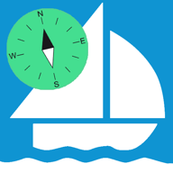

Rhumb Logbook
Rhumb Logbook
A sailing logbook app that records your sea time by itself. Next to the distance you sailed, it shows the shortest route over water from auto-sea-way, which runs on the phone.
auto-sea-way gives your app a route between two points on the water, for example a marina and an anchorage on the next island. The route starts and ends exactly at those points, stays on water and can keep a distance from the coast.
The other open source sea routers we found work on shipping lane networks or on a grid of about 5 km, so near the coast their lines often cut over land. auto-sea-way uses cells about 150 m across along the coast. It finds the shortest route that stays on water and keeps off the coast, also in small bays and narrow channels. One 1.4 GB file covers the whole planet, and it runs on your own server or offline on the phone.
Choose a route. The map shows the line of every router, and red marks show where a line goes over land. Use the boxes in the table to show or hide a router.
Line over land. Land next to a requested point that is itself on land, for example a port position a little inland. Every router has to cross it, so it is not counted as over land.
| Router | Length, nm | vs Pub 151 | Over land, nm | Time, ms |
|---|
The 23 routes of the auto-sea-way benchmark and 22 port pairs from NGA Pub 151, Distances Between Ports, the US table of sea distances. Every router got the same coordinates, and the same code measured every line.
| Router | Stays on water, 16 short routes | Stays on water, all 45 routes | Mean difference from Pub 151 | Closest to Pub 151, 22 pairs | Land crossed, nm | Median time per route |
|---|---|---|---|---|---|---|
| auto-sea-way 0.11.1 | 16 | 41 | 0.40 % | 15 | 1.6 | 44 ms |
| searoute-py 1.6.0 | 10 | 19 | 1.69 % | 2 | 393.5 | 0.66 ms |
| scgraph 3.6.0 | 9 | 11 | 2.84 % | 0 | 923.9 | 0.06 ms |
| searoute-ts 2.3.1 | 5 | 9 | 2.12 % | 0 | 714.8 | 147 ms |
| eurostat 3.6 | 9 | 17 | 2.43 % | 2 | 548.5 | batch only |
| arcnautical 1.0.1 | 6 | 7 | 5.41 % | 0 | 17,183.8 | 56 ms |
A line that goes over land is not compared. Over land means more than 0.1 nm inside the OpenStreetMap coastline. auto-sea-way ran with a 1 nm shore buffer, the other routers with their defaults. Time is the median for one route on a Mac mini (Apple M2). The benchmarks page has the method and every number.
pip or npm and run inside your program. auto-sea-way runs as a separate server, or in an app through its Swift and Kotlin bindings.Shorter lines. auto-sea-way kept 1 nm off the coast where the water allows it, so a line that passes closer to the coast can be shorter. On 4 of the 45 routes another router has a shorter line that stays on water:
On these routes the shorter lines run within 1 nm of the coast for more of their length. In the Malacca Strait it is 48 % of the @arcnautical/maritime-routing line, and 7 % of the auto-sea-way line.
Honolulu. The Pub 151 position for Honolulu is in the inner harbour, and auto-sea-way crosses 0.4 nm of Sand Island to reach it. It marks this leg as land in its answer. On Honolulu to San Francisco, eurostat/searoute stays on water. On the three other routes from Honolulu, no line stays on water.
A sailing logbook app that records your sea time by itself. Next to the distance you sailed, it shows the shortest route over water from auto-sea-way, which runs on the phone.
An app that connects private boat owners with volunteer crew who share the journey and the costs. It uses auto-sea-way on its server to draw the sea route between the stops of a trip.

AvNav pluginA plugin for AvNav, the navigation software that runs on a Raspberry Pi on board. It adds a To here
button that makes a route over water from the boat to the chart crosshair, offline.
Routes are for planning and must not be used for navigation. auto-sea-way knows only where the land is. It has no water depth, so a route can cross shallows, rocks or reefs. It does not know bridges, locks, traffic separation schemes or areas where you may not go, and small harbour details can be missing because the OpenStreetMap coastline is its only source.